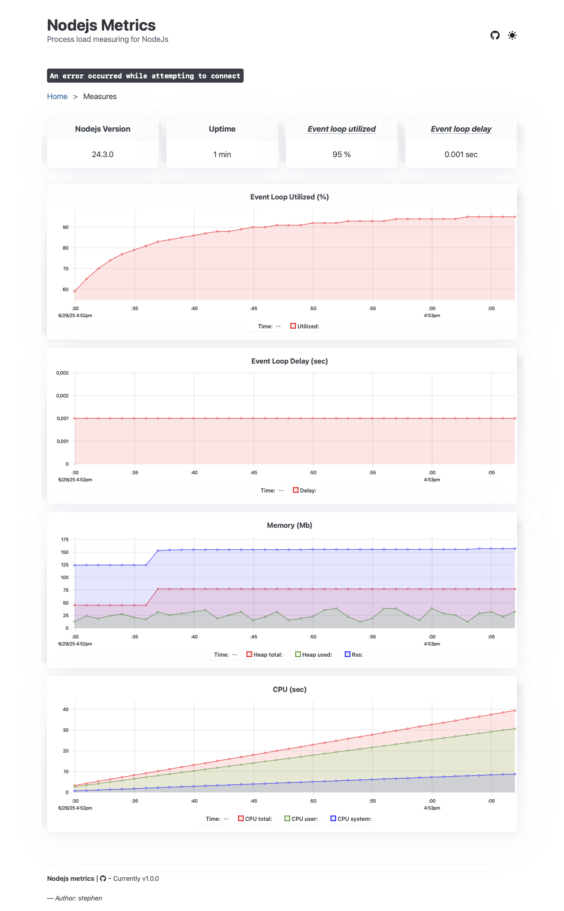

Process load measuring plugin for nodeJs (koa, express, hono), with automatic handling of "Service Unavailable". It can check maxEventLoopDelay, maxHeapUsedBytes, maxRssBytes, and maxEventLoopUtilization values. You can also specify a port server for prometheus metrics's server.
npm i @stephen-shopopop/node-metrics
const Koa = require('koa');
const { underPressureKoaMiddleware } = require('@shopopop/node-metrics');
const app = new Koa();
app.use(underPressureKoaMiddleware({
appName: 'service-order',
maxEventLoopDelay: 1000,
maxHeapUsedBytes: 100000000,
maxRssBytes: 100000000,
maxEventLoopUtilization:0.98,
retryAfter: 10,
webServerMetricsPort: 9090
}));
app.use(async ctx => {
ctx.body = 'Hello World';
});
app.listen(3000);
const express = require('express')
const { underPressureExpressMiddleware } = require('@shopopop/node-metrics')
const app = express()
const port = 3000
app.use(underPressureExpressMiddleware({
appName: 'service-order',
maxEventLoopDelay: 1000,
maxHeapUsedBytes: 100000000,
maxRssBytes: 100000000,
maxEventLoopUtilization:0.98,
retryAfter: 10,
webServerMetricsPort: 9090
}))
app.get('/', (req, res) => {
res.send('Hello World!')
})
app.listen(port, () => {
console.log(`Example app listening on port ${port}`)
})
import { Hono } from 'hono'
import { underPressureHonoMiddleware } from '@shopopop/node-metrics'
const app = new Hono()
app.use('*', underPressureHonoMiddleware({
appName: 'service-order',
maxEventLoopDelay: 1000,
maxHeapUsedBytes: 100000000,
maxRssBytes: 100000000,
maxEventLoopUtilization:0.98,
retryAfter: 10,
webServerMetricsPort: 9090
}))
app.get('/', (c) => c. text( 'Hello Hono!'))
export default app
import { createServer } from 'node:http';
import { Metrics, isUnderPressure } from '@shopopop/node-metrics';
const metrics = Metrics.start({
appName: 'service-order',
sampleIntervalInMs: 1000,
resolution: 10,
webServerMetricsPort: 9090
});
const options = {
maxEventLoopDelay: 1000,
maxHeapUsedBytes: 100000000,
maxRssBytes: 100000000,
maxEventLoopUtilization:0.98
};
const hostname = '127.0.0.1';
const port = 3000;
const server = createServer((req, res) => {
if(isUnderPressure({ ...options, ...metrics.measures() })){
res.statusCode = 503;
res.setHeader('Retry-After', '10');
res.end('Service Unavailable');
}
res.statusCode = 200;
res.setHeader('Content-Type', 'text/plain');
res.end('Hello World');
});
server.listen(port, hostname, () => {
console.log(`Server running at http://${hostname}:${port}/`);
});
// file metrics.js
import { Metrics } from '@stephen-shopopop/node-metrics';
const metrics = Metrics.start({ webServerMetricsPort: 9090, appName: 'service-test' });
process.on('SIGTERM', () => {
metrics
.closeWebServerMetrics()
.then(() => console.log('Metrics terminated'))
.catch((error) => console.error('Error terminating metrics', error))
.finally(() => process.exit(0));
});
node -r ./metrics.js apps.js
sampleIntervalInMs, The interval, in milliseconds, at which samples are collected. Default is 1000resolution, The resolution or granularity of the collected metrics. Default is 10webServerMetricsPort, The port number on which the web server for metrics will listen. We recommend using port 9090.appName, The name of the application, formatted as ${string}-${string} (e.g., "service-order").maxEventLoopDelay, Maximum allowed event loop delay in milliseconds.maxEventLoopUtilization, Maximum allowed event loop utilization (between 0 and 1).maxHeapUsedBytes, Maximum allowed heap memory usage in bytes.maxRssBytes, Maximum allowed Resident Set Size (RSS) in bytes.retryAfter, The number of seconds to wait before retrying a request.GET http://127.0.0.1:9090

Example of metrics: GET http://127.0.0.1:9090/metrics
# HELP nodejs_event_loop_delay_milliseconds The mean of the recorded event loop delays
# TYPE nodejs_event_loop_delay_milliseconds gauge
nodejs_event_loop_delay_milliseconds{service="unknown"} 0.9878575824175826
# HELP nodejs_event_loop_utilized The percentage of event loop utilization
# TYPE nodejs_event_loop_utilized gauge
nodejs_event_loop_utilized{service="unknown"} 0.10445105761836926
# HELP nodejs_heap_used_bytes The amount of memory used by the V8 heap
# TYPE nodejs_heap_used_bytes gauge
nodejs_heap_used_bytes{service="unknown"} 32637488
# HELP nodejs_heap_total_bytes The total size of the V8 heap.
# TYPE nodejs_heap_total_bytes gauge
nodejs_heap_total_bytes{service="unknown"} 34684928
# HELP nodejs_rss_bytes The resident set size, or total memory allocated for the process
# TYPE nodejs_rss_bytes gauge
nodejs_rss_bytes{service="unknown"} 179077120
# HELP nodejs_process_start_time_seconds The process start time, represented in seconds since the Unix epoch
# TYPE nodejs_process_start_time_seconds gauge
nodejs_process_start_time_seconds{service="unknown"} 1750345329
# HELP nodejs_process_cpu_user_seconds_total The total user CPU time consumed by the process, in seconds
# TYPE nodejs_process_cpu_user_seconds_total gauge
nodejs_process_cpu_user_seconds_total{service="unknown"} 1.494779
# HELP nodejs_process_cpu_system_seconds_total The total system CPU time consumed by the process, in seconds
# TYPE nodejs_process_cpu_system_seconds_total gauge
nodejs_process_cpu_system_seconds_total{service="unknown"} 0.120983
# HELP nodejs_process_cpu_seconds_total The total CPU time (user + system) consumed by the process, in seconds
# TYPE nodejs_process_cpu_seconds_total gauge
nodejs_process_cpu_seconds_total{service="unknown"} 1.615762
setTimeout vs setInterval
Under the hood, node-metrics uses the setTimeout method to perform its polling checks. The choice is based on the fact that we do not want to add additional pressure to the system.
In fact, it is known that setInterval will call repeatedly at the scheduled time regardless of whether the previous call ended or not, and if the server is already under load, this will likely increase the problem, because those setInterval calls will start piling up. setTimeout, on the other hand, is called only once and does not cause the mentioned problem.
One note to consider is that because the two methods are not identical, the timer function is not guaranteed to run at the same rate when the system is under pressure or running a long-running process.